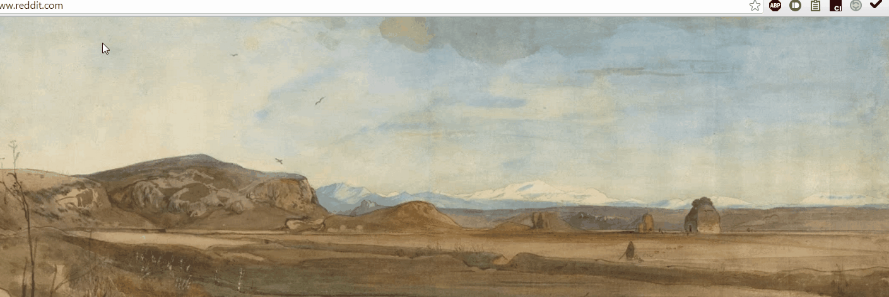

אתר פישינג הינו אתר שמחקה אתר אחר שהמשמתש בוטח בו, כדי להתקיף את המשתמש (למשל, עבור גניבת סיסמאות). מטרתנו הינה להגן עליך מפני התקפות כאלה, אשר פוגעות במיליוני משתמשים.
Shark-King: אין יותר פישינג!
עכשיו שהתקנת את התוסף, הנך משתתף בניסוי שלנו בנושא הגנות מפני התקפות פישינג, והגנה זאת תפעל מעכשיו בדפדפן שלך.
איך זה עובד? Shark-King מאפשר לך לדווח על אתרים חשודים בקלות. כדי לתרגל אותך, Shark-King יציג בפניך (לעתים נדירות) גרסאות מזויפות של אתרים מוכרים.
אל תדאג! האתרים המזויפים של Shark-King לא יפגעו בך בשום אופן, גם אם לא תשים לב לכך שהם מזויפים. אנו שומרים היטב על פרטיותך, תחת ההנחיות של ועדת האתיקה של אוניברסיטת בר-אילן.
Shark-King לא ישמור שום מידע אישי עליך.
Shark-King מעניק לך נקודות כאשר אתה מזהה אתרים מזויפים כראוי. באפשרותך לצפות בניקוד ובהתקדמות העדכניים שלך בחלק התחתון של התפריט של Shark-King:
אל תיפול בפישינג - היה כריש!
שלב האימון
כעת, לאחר שהשלמת את המבחן הראשוני, לחץ על הכפתור "משחק פישינג" כדי לעבור למשחק שיעזור לך ללמוד עוד כיצג להתגונן מפני התקפות פישינג. לאחר שתסיים את המשחק, תתבקש לבצע מבחן סיכום, לאחריו תוכל להמשיך לגלוש באנטרנט כרגיל.
Shark-King שומר רשימת אתרים חשודים, אליה תוכל לצרף כל אתר שנראה לך חשוד.
כמו כן, Shark-king שומר רשימת אתרים בטוחים, אשר מוגנים על ידי Shark-King באמצעות תהליך התחברות בטוח יותר, כמוסבר להלן:
תהליך התחברות בטוח
להלן תתבקש לבחור תמונה ייחודית. לאחר מכן, בכל פעם שתתחבר לאתר בטוח, Shark-King יציג תמונה זו, יחד עם עוד 3 תמונות אחרות. לחץ על התמונה הייחודית שלך כדי להתחבר!

שלב פשוט זה יעזור לך לזהות את רוב התקפות הפישינג הקיימות. אם אתה גולש לדף ההתחברות של אתר בטוח, ואינך נתקל בתהליך בחירת התמונות הנ"ל, עליך לסמן את האתר כאתר חשוד!
נא בחר את התמונה הייחודית שתשמש אותך מעתה בתהליך ההתחברות הבטוח לאתרים בטוחים. בפניך שתי אפשרויות:
העלאת 4 תמונות אישיות, ובחירת אחת מהן שתשמש כתמונה הייחודית שלך
בחירת תמונה מתוך התמונות המוצגות להלן
אם בחרת להעלות 4 תמונות אישיות (תמונות .jpg בלבד), נא עשה זאת כאן (זכור - העלה את התמונה הייחודית שלך היכן שכתוב "תמונה ייחודית"):
אם בחרת לא להעלות תמונות אישיות, אנא בחר תמונה מתוך האוסף להלן:
שלב האימון
כעת, לאחר שבחרת את התמונה הייחודית שלך, הנך מתבקש לעבור שלב אימון, שבו תשתמש בתהליך ההתחברות הבטוח שתואר לעיל.
אנו נציג בפניך 6 אתרים, אחד אחרי השני. אם הנך מבחין בתהליך הבטוח (כלומר, מוצגות בפניך 4 תמונות, שמתוכן עליך לבחור בתמונה הייחודית שלך), תוכל לסמן את האתר כאתר בטוח. אחרת, סמן את האתר כאתר חשוד. כדי להתחיל, לחץ על הכפתור "התחל שלב אימון".
תהליך התחברות בטוח
זכור תמיד ללחוץ על האייקון של Shark-King כדי להתחבר לאתר בטוח.
צעד פשוט זה יעזור לך (ול-Shark-King) לזהות התקפות פישינג ולהגן מפניהן.
לעולם אל תזין מידע רגיש לאתר בטוח לפני לחיצה על האייקון של Shark-King וקבלת הודעת התחברות בטוחה!
שלב אימון
כעת, לאחר שסיימת את המבחן הראשוני, הנך עומד לעבור שלב אימון, שבמהלכו תשתמש בתהליך ההתחברות הבטוח שתואר לעיל.
אנו נציג בפניך 6 אתרים, אחד אחרי השני. אם הנך מבחין בתהליך הבטוח, סמן את האתר כאתר בטוח. אחרת, סמן את האתר כאתר חשוד. כדי להתחיל, לחץ על הכפתור "התחל שלב אימון".
כאשר Shark-King יפעיל התקפת פישינג, מצופה ממך לזהות בעיה בטיחותית כלשהי, ולדווח עליה מיד על ידי סימון האתר כאתר חשוד באמצעות תפריט Shark-King.
כאשר תזהה בעיה בטיחותית כראוי, Shark-King יודיע לך על כך. גם אם לא תזהה את הבעיה הבטיחותית כראוי, תקבל על כך הודעה, כדי שתוכל להיות זהיר יותר בפעם הבאה.
שלב אימון
כעת, לאחר שסיימת את המבחן הראשוני, הנך עומד לעבור שלב אימון, שבמהלכו Shark-King יציג בפניך הודעת משוב על הבחירות שלך, כפי שתואר לעיל.
אנו נציג בפניך 6 אתרים, אחד אחרי השני. עליך לסמן את כל אחד מהאתרים כאתר בטוח או אתר חשוד, ולקרוא את המשוב שיוצג בפניך. כדי להתחיל, לחץ על הכפתור "התחל שלב אימון".